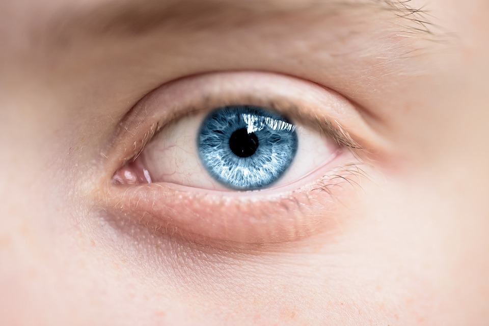
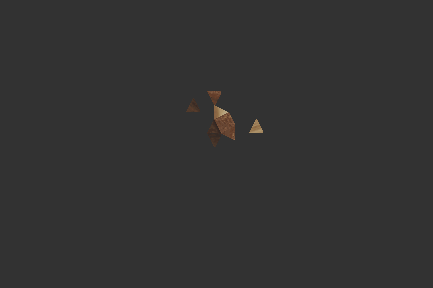
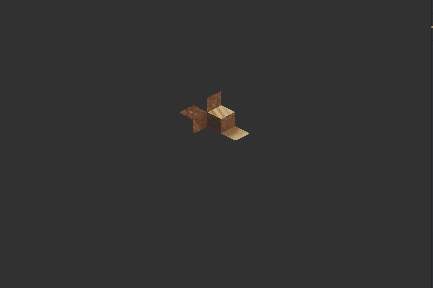
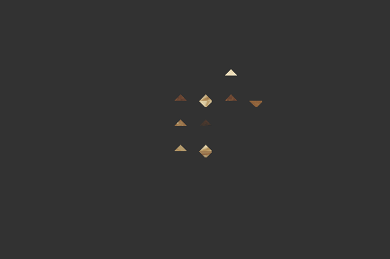
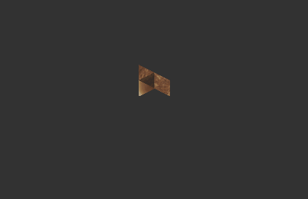
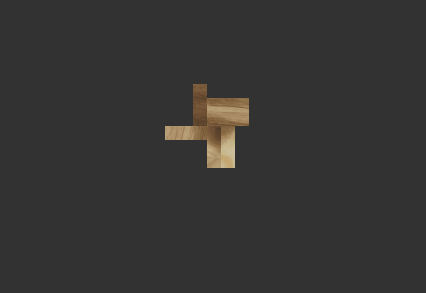
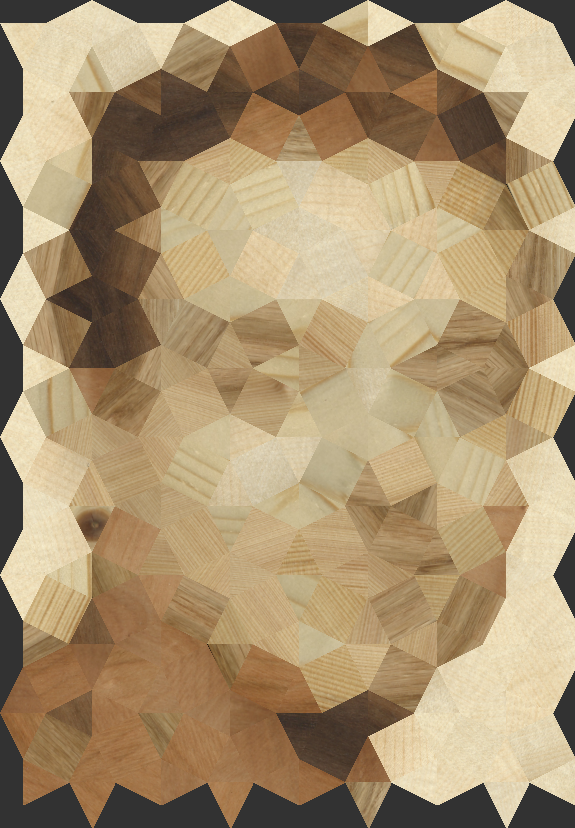
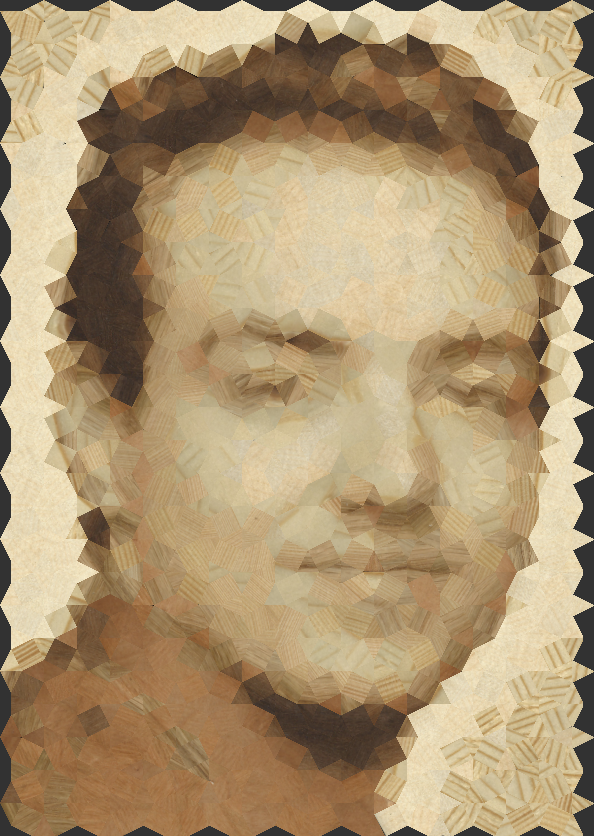
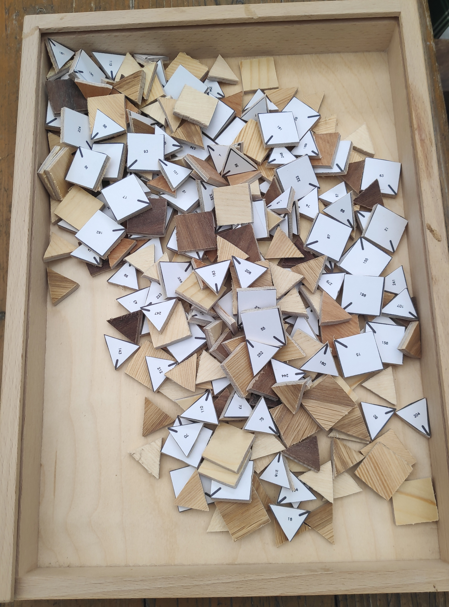
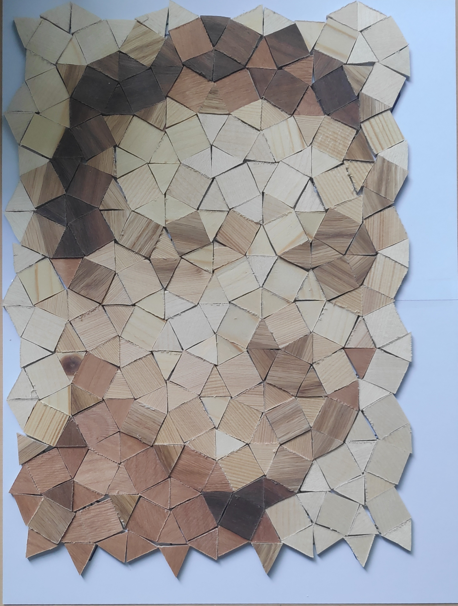

Producible Computational Parquetry
Project by Fabian Stroschke (Github)

Mosaics are mostly created from small evenly colored tiles and where already created in ancient Rome and Greece. The process of creating mosaics with wood patches instead of colored tiles is usually called parquetry. Finding the best wood patches for these kinds of mosaics can be difficult and time-consuming, while leaving only al little margin of error. To address these problems Iseringhausen et al.[1] created an algorithm for patch-based image generation, that is constrained in its limitation of resources, and allows the fabrication of these images with real world materials.
Motivation
While the approach of Iseringhausen et al.[1] created parquetry by dividing a picture into a grid of quadratic patches and then altering them based on the edges in the picture, this project tries to solve the problem of creating parquetry by utilizing different tessellations. The idea of this approach is to approximate the edges within the picture, not by deforming the edges of each patch but instead by using pattern consisting of different regular geometric shapes. By using shapes with straight edges, the patches remain simple to cut and can be manufactured without the use of CnC machines, while also generating a picture that looks less discretized compared to a grid pattern.
Algorithm
The algorithm first load the config and pattern files. Then it starts preprocessing of the pictures. The program
matches the histogram of the target picture and the cumulated histogram of all source textures and interpolates
the new picture with the original picture. This step aligns the color spaces of target and source picture and allows
for a better use of the source textures. Then a filtered image is created for each picture by using an edge filter.
The histogram matching and creation of filter images where suggested in the paper from Iseringhausen et al.[1] to
to increase the quality of the resulting picture.
Before the target picture is turned into patches based on the provided pattern, the program creates rotated versions of
the source textures. Adding rotated versions of source textures removes the need to rotate each patch in every step of the patch search because
the algorithm just needs to search on every rotated texture to include rotated wood patches.
When the preprocessing is done, the patches are ordered priority in which they are computed. The priority consists
of the distance from the patch to the center of the image and the average of the salience values contained in the patch.
The salience values of each pixel is calculated by using the salience filter form OpenCV. After ordering the patches by priority
they are distributed on a thread pool. The algorithm then uses a greedy approach to look for the best wood patch.
When all wood patches are found, the program generates the cut and assembly maps and creates an artificial picture of the parquetry.
Results
The algorithm was applied to a set of different pictures with varying tessellations.
Different pattern
The figures 2 to 6 show the results of the algorithm with different tessellations with figure 1 as the target picture. All results where computed with the same wood textures.
Figure 1
Target picture.
Figure 2
Pattern consisting of squares and triangles.
Figure 3
Pattern consisting of rhomboids.
Figure 4
Pattern consisting of squares and octagons.
Figure 5
Pattern consisting of alternating triangles.
Figure 6
Pattern consisting of alternating rectangles.
Comparison with target picture
To compare the results with the original image the animations in figure 7 and 8 cross-fade between the target and the synthetically generated picture. The image in figure 8 was generated to build a prototype out of newspaper.
Figure 7
Cross-fade between target picture and generated one. The picture used the same textures as figure 2 to 6.
Figure 8

Cross-fade between target picture and generated one. The picture used a newspaper commercial as a source texture.
Manufacture the a picture
Figure 9
Fabian Stroschke
Figure 10
Picture with about 280 wood patches.
Figure 11
Picture with about 1300 wood patches.
As a template for a produced piece of parquetry I choose the picture shown in figure 9. The background
of the picture was turned white to prevent the background from fusing with the rest of the picture. I generated
two pictures with a different amount of wood patches shown in figure 10 and 11. To keep the cutting time reasonably low
I choose the picture in figure 1 for production.
The individual wood veneer used for the production where between 1 and 2 mm thick and most of them where to brittle
for cutting with the band saw shown in figure 12.
To reinforce the wood pieces they were glued to 2 mm thick plywood. Then the wood cut be cut into pieces and each part
took 1-3 minutes to manufacture. The production of all 280 wood patches took about 6-7h of sawing time.
Assembly of the patches in figure 13 took additional 1-2 hours. The final result is displayed in figure 14.
Figure 12

Band saw used for cutting.
Figure 13
All cut out patches
Figure 14
Assembled picture
Conclusions and future work
The use of tessellations other than a tesselation out of squares usually results in better looking parquetry but can also lead to weird artifacts depending on the picture and tesselation used. The amount of detail achieved by the project does not quite reach the results Iseringhausen et al.[1] achieved with their approach, but the cuts that need to be made to manufacture the patches are way simpler. Approximating edges within a patch by splitting the patch into two separate patches would probably have improved the quality of the pictures, while an approach of merging adjacent patch could have kept the amount of parts to a minimum. The time of this project was too short to implement these features, and there is a chance that the pictures could have looked worse because both features would destroy the regularity of the tesselation. Nevertheless, these features would be interesting additions for future improvements.
How to use
1. Preparations
Before starting you need to choose the resources the program should work with. The project contains already some examples, so if you want to try it first you can skip this step and revisit it later.
Picking a target picture
There are no limitations when picking a target picture, but there are some suggestions about which pictures usually result in a better recognizable image:
- Faces (human or animal) or parts of them(e.g. an eye) are in most cases better recognizable than other pictures
- Pictures with fewer components are better in most cases so try to choose a cat before a gray background over a crowd of people or a patch of grass.
- The program mostly cares about differences in brightness. Therefore, a person with green clothes could merge with a red background. Most of these cases should be solved with the integrated histogram matching, but try to choose picture where the individual components differ in brightness.
Getting the (wood-)textures
TL;DR:
- Scan the material and get the DPI of it.
- Mark unwanted parts of the image black.
Why is the wood in the heading in parentheses, you ask? While this project was focused on using wood, other materials like pictures, colored paper or newspaper can also result in an interesting collages. But whatever material you choose, you need to turn it into a digital image. For this, scanning it with a scanner should be your first choice. It gives you an evenly exposed image and can calculate the exact size of your wood by using the DPI and image size. For pieces that are too big for a regular scanner, cutting it into smaller pieces is probably the best choice. Whatever method you choose, get the DPI of the picture, because it will be needed later.
If your texture contains parts that you don't want in your end result, take an image editing tool of your choice and paint these parts black(Hex color 0x000000). Every thing in this color will be excluded from the search process.
2. Setup configuration
Config file
Table below explains the attributes of the Config.json file.
| Attribute Name | Description | |
|---|---|---|
"rotations": |
How many rotation should be used. Higher is better. Increase results in linear runtime increase. | |
"stepSize":{ |
How many pixels are skipped along each axis when searching for patches(1=every pixel is used, 2=every 2nd pixel is used). | |
"x": |
Lower is better. Decrease results in linear runtime increase. | |
"y": |
Lower is better. Decrease results in linear runtime increase. | |
"filter_type": |
Type of edge filter to be used (0=Sobel, 1=Canny, 2=Laplacian) | |
"filter_intens_ratio": |
Weighting between filter image and normal image used in patch search(1=only filter image, 0=without filter image) | |
"histogram_match_ratio": |
Weighting of interpolation between histogram matched image and normal image (1=fully histogram matched, 0=image without histogram matching) | |
"layout_path": |
Relative path to pattern file | |
"output": { |
"appendix": |
Appends test to output folder name |
"text_scale": |
Scales text size | |
"dpi": |
Resolution in which the cut and assembly maps are generated | |
"cut_map": { |
"flip_vertical": |
Flips left and right of the cut maps |
"flip_horizontal": |
Flips up and down of the cut maps | |
"cut_width_mm": |
Width of cut in millimeter | |
"dpi": |
Resolution that is used for computation. Higher is better. Increase results in quadratic to cubic runtime increase. | |
"target": { |
"path": |
Relative path to the target picture |
"output_width_cm": |
Size the finished picture should have after assembly | |
"woodTextures": [{ |
"path": |
Relative path to wood texture |
"dpi": |
Resolution at which the texture was scanned/sampled |
Pattern file
Table below explains the attributes of the pattern files.
| Attribute Name | Description | |
|---|---|---|
"gridStepX": |
Distance to the next grid point along the x-axis | |
"gridStepY": |
Distance to the next grid point along the y-axis | |
"show": |
"on": |
If true, generates the pattern and displays it before executing the computation |
"exit": |
If true, stops the program after the pattern was shown(works only if 'on' is true) | |
"convert_to_cm": |
"on": |
If true, scales the patches until the specified width matches the dpi settings in the config file |
"width_in_cm": |
Width of patch with the smallest width in cm. | |
"scale": |
"x": |
Scales the pattern along x-axis. Applies before conversion to cm. |
"y": |
Scales the pattern along y-axis. Applies before conversion to cm. | |
"Shapes": |
Contains the different patch shapes as lists of points. | |
"Layout": |
A matrix containing the order in which the shapes are placed. Each entry is a grid point. Each number stand for the position of the shape in the shape list. The pattern repeats if hte end of a row/column is reached. |
3. Compile and run
Requirements
(Skip this step if you use the already compiled binary and head to Running the program)
Compiling the project requires:
- GCC / G++
- CMAKE
- Boost
- OpenCV
For installing it on Ubuntu you can use the following command in the terminal:
sudo apt update && sudo apt install \
build-essential \
cmake \
libboost-dev \
libopencv-dev \
Compiling (on Ubuntu)
(Skip this step if you use the already compiled binary and head to Running the program)
To compile it with CMAKE, run these commands in the root directory of the project:
mkdir build
cd build
cmake ..
make
Running the program
After compiling it (or you use the compiled binary in the bin directory of the project) you can run the program with:
./PictureToWood [config path] [pattern path]
or
./PictureToWood_x64 [config path] [pattern path]
The config path is required for the program to run, the pattern path can also be defined in the config file.
4. Print and production tips
Adjust DPI
OpenCV will save the cut masks always as a 96 DPI image, even if you set the DPI in the config file to a different value. The mask will be generated with the DPI you specified but you need to change the DPI value manually.
Example(with Paint.net): The cut mask resolution was set to 300 DPI in the config file.
- Open the image with Paint.net
- Go to "Image->Resize" or press CTRL+R
- Go to "Resolution" and set the unit to "pixel/inch"
- Replace the number in the resolution field with 300
- Save the picture (not all file formats will support dpi)
Printing it in real size
Your assembly map may be bigger than the maximum page size you can print. In this case you can use Paint to print your image over multiple pages:
- Open the image in Paint
- Go to "File->Print->Page Setup"
- Under Scaling, select the Point "To 100%"
- Click OK
- Print the image from Paint, and make sure to select “All Pages”
Applying the mask
If you have a hard time to align your cut mask on your wood, think about drilling little holes in 3 corners of the wood and paint them black in your scanned image. The black masks will also be printed on your cut mask, so you can align the printed marks with holes you drilled.
If you want to apply the mask to the backside of your wood, set one of the flipping option in the config file on true. If you flip it make sure you flip your wood in the right way, flipping left-to-right(vertical) is different from flipping up-to-down(horizontal). If used holes for aligning you can use the to make sure your mask is in the right orientation after flipping.
Cutting
While cutting make sure you are cutting away only the black border of each piece. Everything white on the inside of the border is part of your piece so try to cut nothing from it. The line pointing from a corner to the inside of your is an orientation marker for assembling the pieces so leave this line out while cutting.
Assembly
For assembling the parts you can print out the assembly map, like described in Printing it in real size. Then you can just put your pieces on the corresponding field of your map. Make sure the lines pointing to the inside of your piece match the line on the map to achieve the right rotation of your piece.
References
- [1] J. Iseringhausen, M. Weinmann, W. Huang, M.B. Hullin, Computational Parquetry: Fabricated Style Transfer with Wood Pixels, ACM Transactions on Graphics 39 (2), 2020, https://light.informatik.uni-bonn.de/wood-pixels/.